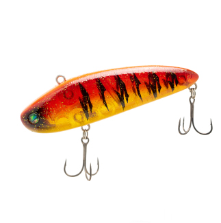
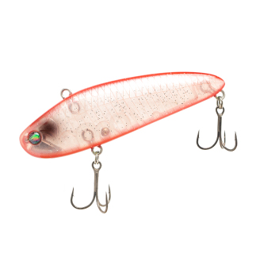
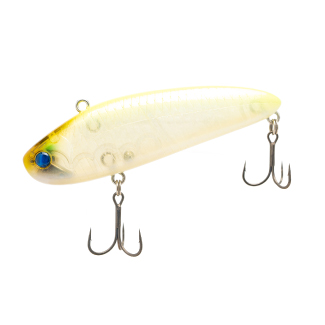
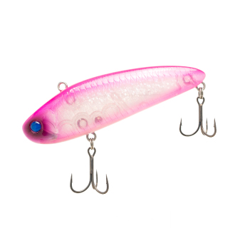

モラモラ
（MOLAMOLA）
モラモラ（MOLAMOLA）はOBASSLIVE（オーバスライブ）のワーミングバイブです。
仕掛けて獲る、喰わせのプラグ。琵琶湖生まれのブランド「オーバスライブ」の、ワーミングバイブです。
ウィードの凹凸に絡ませながらシェイクやハングオフで誘ったり、無防備にフラフラ泳ぐベイトをイメージして引いたり。ワームのようにじっくり魅せて食わせる、スローフローティングのプラグです。

画像出典:OBASSLIVE公式HP
スペック
- メーカー
- OBASSLIVE（オーバスライブ）
- タイプ
- スローフローティング
- 全長
- 100mm（公式）
- 重量
- 3/4ozクラス（フック・リング込みで約20g）
- ボディ
- 硬質ウレタン樹脂
- フック
- RYUGI ピアストレブル フロント#4・リア#5
- リング
- BOMBADAAGUA Forte No.3
- カラー
- 全15色（公式掲載）
- ターゲット
- ブラックバス
- 価格
- 4,180円（税込・販売店価格）
▼今すぐチェック
モラモラの特徴
ワームのように魅せて食わせる、スローフローティングのプラグ
-
ウィードに絡めて「仕掛ける」
ウィードの凹凸をイメージして、わざと絡ませながらシェイクやハングオフで誘う。トゥイッチを入れながら巻いて仕掛けるのも面白い。
-
フラフラ泳ぐスローフローティング
無防備にフラフラ泳ぐベイトをイメージした動き。リップラップやウィードポケットに潜むバスに、浮かせながらじっくり見せられる。
-
ウェイトチューンで使い分け
低水温やタフな時は、ウェイトシールでデッドスローフロートやサスペンドにして、中層や底付近をデッドスローやストップ＆ゴーで引く。
モラモラの使い方
基本はシャロー（主にウィードフラット）を、アングラーが操りながらスローに引いて、食性に訴えて食わせます。
ウィードに触れたらシェイクして外したり、ハングオフさせて止めたり。リップラップやウィードポケットでは、浮かせながらフラフラ泳がせて誘いましょう。
モラモラの得意な状況
琵琶湖のようなウィードの多いシャローで、バスをスローに狙う時が得意です。
水温が低い時やタフな状況では、ウェイトチューンして中層や底付近をデッドスローで引くと、使える場面が広がります。
ワンポイント
推奨タックルはM〜MHのベイトロッドに、ナイロン16〜25lbかフロロ14〜20lb。メーカーのテストでは、スナップはウォーターランドのNo.2を使っています。
オススメカラー
モラモラは公式に15色が載っています。そのうち4色を紹介します（画像は公式より）。

プリバトルレッドホークレッド系のアピールカラー。春先や濁りの日に。

SAKURA海老エビを意識したクリア系。澄んだ水のシャローに。

鉄板チャート目立つチャート系。濁り潮やローライトに。

リアクションピンクピンクで目立たせて、リアクションで食わせたい時に。
画像出典:OBASSLIVE公式HP
モラモラに似ているルアー
-
 クー・シー80F
アクアウェーブ
詳細はこちら＞
クー・シー80F
アクアウェーブ
詳細はこちら＞
シャローをスローに攻めるフローティングのS字系。
-
 TNバイブレーション
ジャッカル
詳細はこちら＞
TNバイブレーション
ジャッカル
詳細はこちら＞
バス用の定番バイブレーション。
-
 エッジバイブ120
エレメンツ
詳細はこちら＞
エッジバイブ120
エレメンツ
詳細はこちら＞
大きめのシルエットのバイブレーション。